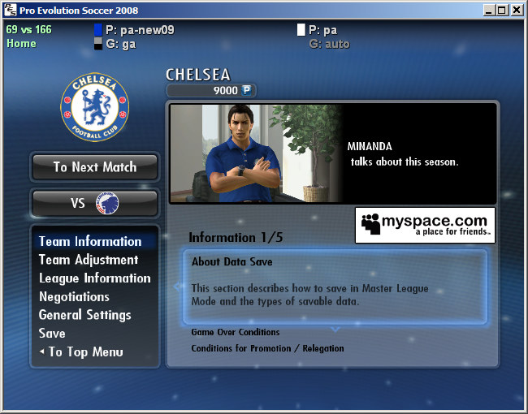
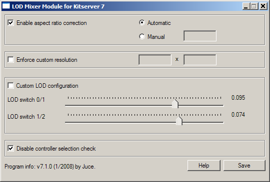
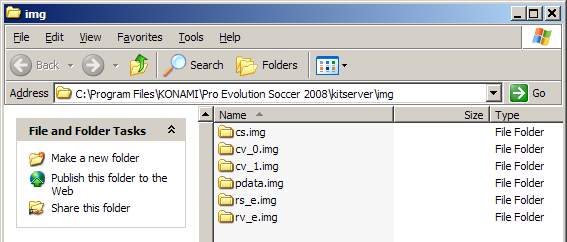
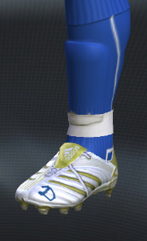
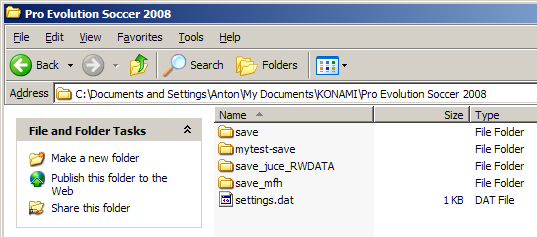
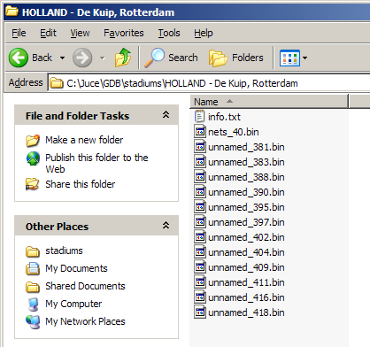
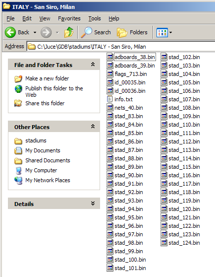

Kitserver 7 Manual
September 6, 2008 - Kitserver 7.4.3 *GRAND FINALE*
The most up-to-date version of this documentation, and the translations to many languages, are located here: http://kitserver.ath.cx/docs/
1. Introduction
Kitserver 7 is an add-on program for Pro Evolution Soccer 2008. It is a loader and manager for various modules.
Below is a quick summary of the available features. Follow the link in the left column to get more details about a particular module.
| Kserv 7.3.1.4 |
kserv.dll |
Assign kits to all teams (no re-linking needed), Extra (3rd,4th,etc.) kits. Allows selection of kits in all game modes: Exhbition, Cup, League, Master League. |
|---|
| LOD Mixer 7.1.0 |
lodmixer.dll |
Various tweaks to graphics and game options:
Select quality levels which PES doesn't want you to choose;
Any window resolution supported, hidden fullscreen resolutions unlocked;
Manual/Automatic aspect ratio correction;
Disable controller check for Master League/League/Cup games: this allows your
friend to play for the opposition team.
|
|---|
| AFS2FS 7.2.3 |
afs2fs.dll |
Manage AFS (.img) game content using files and folders: much easier and quicker to install/remove patches, without the need modify *.img files |
|---|
| Faceserver 7.4.0 |
fserv.dll |
Assign special face/hair to any player you want. |
|---|
| Bootserver 7.4.1.1 |
bootserv.dll |
Assign unique boots to any player you want. |
|---|
| Scheduler 7.3.1.1 |
sched.dll |
Make changes to Konami Cup tournaments: now possible to play Home/Away matches in the groups, and also have Home/Away knock-out stages - ala UEFA Champions League |
|---|
| Read/Write data 7.4.0.1 |
rwdata.dll |
Manage your "save"-data. Useful for patchmakers - to redirect all read/write operations from the standard "save" folder, to another one. |
|---|
| Camera module 7.2.0 |
camera.dll |
Increase the camera viewing angle for Normal and Wide cameras, and enjoy new playing experience. |
|---|
| Time expander 7.2.0 |
time.dll |
Set the match time to any number of minutes you want between 1 and 255. |
|---|
| Stadium server 7.3.2.3 |
stadium.dll |
Organize your stadiums in the GDB. |
|---|
| Ball server 7.4.0.2 |
bserv.dll |
Organize your balls in the GDB. |
|---|
2. Installation / Removal
As with previous version of Kitserver, you have to unpack the archive to your PES installation folder. It should look like this:
 Then go to kitserver folder and run the setup.exe. What is new is that you can now also select your
settings.exe. This is necessary because some changes are only possible in that
file. simply select these both files (they should already be preselected) and
click "Install". If you choose that you don't want to use Kitserver any longer,
run setup.exe again and click "Remove". You can also install/remove Kitserver
only for one exe by setting the other one to "no action".
Then go to kitserver folder and run the setup.exe. What is new is that you can now also select your
settings.exe. This is necessary because some changes are only possible in that
file. simply select these both files (they should already be preselected) and
click "Install". If you choose that you don't want to use Kitserver any longer,
run setup.exe again and click "Remove". You can also install/remove Kitserver
only for one exe by setting the other one to "no action".

2.1. Advanced usage of setup.exe
The kitserver setup.exe program can also be run without GUI - in a so-called batch or command-line mode. This can be useful, if kitserver is part of a bigger patch, which contains an installer, and typically the last step of the installer is to attach kitserver to the game EXE file. This can be accomplished by running the setup like this:
setup --install --gfile={game-exe} --sfile={settings-exe}
setup --remove --gfile={game-exe} --sfile={settings-exe}
Example:
setup --install --gfile=..\PES2008.exe --sfile=..\settings.exe
3. Usage and configuration
3.1. Running settings.exe
After installing Kitserver, if you run settings.exe from your game main folder, you are asked if you want to enable all quality
levels. In PES2008, Konami doesn't allow you to choose a high quality level if
the game thinks your PC isn't good enough for that. If you click on "Yes", that
check is removed and you can try if they are right with their assumption.
Apart from that you can now choose 4 controllers in the "Controller" tab. That
means you can configure your gamepads here and later play with them. Note that
by default the keyboard is controller #1. If you setup your gamepad as first
controller, you can't play against someone using the keyboard and your gamepad.
For that, you shouldn't setup a gamepad as first controller but always as #2, #3
or #4. However you can't use your gamepad in the main menu then, that works only
with the first controller.
3.2. Main configuration file: config.txt
In the kitserver folder, there is the program's main configuration file - config.txt. This is where you would need to make changes to enable/disable individual modules (DLLs), and/or configure module settings.
Here's how my config.txt looks like:
[afsio]
debug = 0
[bootserv]
online.enabled = 0
random.enabled = 1
[bserv]
random.auto = 1
[fserv]
online.enabled = 0
[kload]
debug = 0
dll = zlib1.dll
dll = libpng13.dll
dll = lodmixer.dll
dll = afsio.dll
dll = kserv.dll
dll = fserv.dll
dll = bootserv.dll
dll = stadium.dll
dll = bserv.dll
dll = afs2fs.dll
dll = sched.dll
dll = rwdata.dll
dll = time.dll
dll = camera.dll
gdb.dir = "c:\juce\"
[lodmixer]
aspect-ratio.correction.enabled = 1
controller.check.enabled = 1
[rwdata]
debug = 1
data.dir = "mytest-save"
Each module can have its own configuration section, which starts with [module-name], and typically has one or more options following it. Now, normally you wouldn't need to modify config.txt file, except for the cases, when you need to modify the behaviour of a particular module (DLL), or enable/disable such DLL. For example: rwdata module reads the "data.dir" setting from config.txt - check rwdata section for more details on this.
To disable a particular module - just comment out the corresponding line in the [kload] section by putting a '#' symbol at the beginning. (Or you can delete that line altogether.)
The order of the DLLs is important. In particular: zlib1.dll, libpng13.dll must be loaded in that order before kserv.dll; also afsio.dll must be loaded before fserv.dll, bserv.dll, bootserv.dll, stadium.dll, and afs2fs.dll. Only in very rare situations you should try re-arranging the DLLs.
3.3. GDB location
GDB is a collection of different types of game data. In the current release, those include: kits, faces and hair files. In the future, there will also be stadiums and possibly boots. The GDB is essentially a simple hierarchy of folders: the root folder itself MUST be named GDB, inside it there is a folder for kits: uni, and a folder for faces and hair: faces.
By default the GDB folder itself is located inside kitserver folder, but you can put it anywhere on your hard disk. To do that, you would need to use "gdb.dir" setting in the [kload] section of the config.txt file, like this:
[kload]
gdb.dir = "c:\mypesfiles\"
...
A couple of important notes here:
1. The path MUST end with a backslash, like in the example above.
2. You specify the folder that holds the "GDB" folder in it, instead of the "GDB" folder itself. So, in the example above, the full path of the GDB folder would be c:\mypesfiles\GDB, but in the config.txt, the "GDB" ending must be omitted.
Top
4. Kserv Module (kserv.dll)
Kserv module is responsible for serving kits from the GDB ("Game content DataBase") during the game. The main feature of it is that you are not limited to the slots that cv_0.img has for the kits, and you can assign a kit to any team. With Kserv and GDB, it is also possible for the teams to have more than 2 kits: so instead of just a standard pair of 1st and 2nd, you can have a potentially unlimited set of alternative uniforms for playing in European cups, or special exhibition games and so for. In real life, typically a team has a wide selection of kit variations. By organizing your kits in the GDB, it is possible to achieve that.
Kserv was historically the first module implemented in the original Kitserver program, made for PES3. That's where the Kitserver name originated from. Later, as more functionality were introduced as new modules, to avoid confusion, we changed the name of the module that serves kits to kserv, while Kitserver name now refers to the entire program.
4.1 GDB organization
The GDB contains a folder named uni, which is responsible for storing
the team kits (uniforms). The single most important file inside uni is called map.txt.
This file tells kitserver where to find the kits for particular team. As you know, each team
has a unique id - a integer number from 0 to 203, i think. So
for every team in the GDB, you must specify in the map.txt, where the kits are for this team.
Here is an example:
# This config maps team number into folder name
# Format: <team-num>,"<folder name>"
# Example: 21,"Russia"
21,"National\Russia"
69,"EPL\Chelsea"
73,"EPL\Liverpool"
IMPORTANT: Double quotes are not required, but advised - just so that there is no ambiguity about
folder name. For IDs for all the teams - see
uni.txt file
Please note that the sample GDB (provided with kitserver) is just one possible way of organizing the teams and
folders. It uses "EPL" folder to group all english teams, "National" - to group all national
teams, and so for. You may find that you just prefer a flat list of folders - without these
extra groups. In that case, just modify the map.txt file accordingly, and create
the structure of folders that you prefer. That's the main advantage of having map.txt - the
flexibility of kit organization.
You can see from map.txt above that in order to find a kit for team #69, the kitserver needs to go to the
folder GDB\uni\EPL\Chelsea. This folder will contain all of the kits that are
available to team #69. Inside it, you must create an individual folder for each kit. Like this:
For players, 1st kit must have a folder name pa, 2nd - pb. Extra kits can have
any folder names that start with letter "p". I found it useful to prefix all extra kits with
px-. For example, px-blue. For the goalkeepers, 1st kit must be in the folder
ga, 2nd - in the gb. Extra kits can have any folder names that start with letter "g".
IMPORTANT: Folder name acts as a kind of ID for kitserver, which puts the
additional restriction on all those folder names: they cannot contain spaces, and preferably
they should be relatively short, and in English,French or other language withing Latin1
(iso8859-1) character set. Typically, if you want to make sure kitserver can properly
find/read the folder, just use latin characters, digits, underscore, and the dash (minus sign).
Now let's move on inside one of the kit folders. Take pa, for example.
See the table below for explanation of each file:
Images must be in PNG format: 8-bit paletted or 4-bit paletted (those may be used with fonts/numbers). So the filename must have
a ".png" extension.
| Reserved file name | Meaning | Format |
|---|
| kit.png | Kit texture |
512x512 8-bit paletted image in PNG format.
|
| font.png | Font texture: used for names on the back of the shirt |
512x128 8-bit or 4-bit paletted image in PNG format. |
| numbers-back.png | Numbers texture: used for (big) numbers on the back of the shirt |
512x256 8-bit or 4-bit paletted image in PNG format. |
| numbers-front.png | Numbers texture: used for smaller front numbers |
256x128 8-bit or 4-bit paletted image in PNG format. |
| numbers-shorts.png | Numbers texture: used for numbers on shorts |
256x128 8-bit or 4-bit paletted image in PNG format. |
| config.txt | Kit attribute configuration file (see next section for more details) |
text file (in UTF-8 encoding) |
IMPORTANT NOTE TO KITMAKERS:
BMP kits are no longer supported, please use PNG format instead.
4.2. config.txt
This is the attribute configuration file.
As before, it is just a plain text file - you can use Notepad or any other text editor to
view or modify it. For each folder, you should have a config.txt file in it.
Here's the summary table of all the supported attributes:
| Attribute name | Meaning | Format | Example |
|---|
| model |
identifier for 3D-model of the shirt |
decimal integer |
model = 37 |
| collar |
Collar-type |
0/1/2/3 (0=yes, 1=no) |
collar = 0 |
| shirt.number.location |
Where on the front of the shirt the number should be placed. ("off" means the number
will not be displayed at all.) This only applies to national teams.
|
center|topright|off |
shirt.number.location = topright |
| shorts.number.location |
Where on the shorts the number should be placed. ("off" means the number
will not be displayed at all.)
|
left|right|off |
shorts.number.location = left |
| name.location |
Where on the shirt the name of the player should be placed. This is useful
for teams like Boca Juniors, who have player names printed at the bottom of the
shirt. ("off" means the name will not be displayed at all.) |
top|bottom|off |
name.location = top |
| logo.location |
Where on the shirt the sponsor logo should be placed. (This attribute
is probably not gonna be very useful with kitserver, since if the
team has the logo on the back of the shirt, it will probably be painted
as part of the kit texture itself, by kitmaker) |
top|bottom|off |
logo.location = off |
| name.shape |
Indicates whether the name should be curved or straight. The values
have the same meaning as in Edit Mode: type1 - straight, type2 - slightly curved,
type3 - curved, type4 - even more curved. |
type1|type2|type3|type4 |
name.shape = type1 |
main.color
( radar.color ) |
This attribute specifies the main color of the shirt. It is also used as the color of the players on radar screen. It also influences the kit that is selected by default. (The old name "radar.color" is also supported for backwards compatibility) |
color, written in hexadecimal format RRGGBB (red,green,blue) |
main.color = 0A5D88
radar.color = 0A5D88 |
| shorts.color |
This attribute specifies the color of the player/gk shorts. The color
of shorts is used by the game to determine correct color of the underpants
for those players who wear them, and have them set to match the shorts
color. |
color, written in hexadecimal format RRGGBB (red,green,blue) |
shorts.color = 0A5D88 |
| description |
Any notes about the kit. This text will be displayed on
kit selection screen, under the mini-kit. Useful when there are
several similar kits that have near identical mini-kit rendering
but you want to know which one is currently selected. |
any text in double quotes |
description = "All white (WC2006 Final)" |
By default, the usage of "description" attribute is enabled, but if you want, you can disable it. To do that, edit your config.txt file, and the following option to the [kserv] section:
[kserv]
use.description = 0
4.4 Kit Selection
In order to provide a visual reference for currently selected GDB kits (including extra kits), Kitserver uses a Kit Selection Overlay, located at the top of your screen - see the image below. The top left corner indicates the team IDs (69 vs 73), and in case of Master League, there's also a Home or Away text, showing whether your team is player at home or away. In the center of the screen, the two sections represent the kit selection for the Home team (left side) and the Away team (right side). Initially, the kit selection is set to P: auto and G: auto, meaning that kitserver lets the game choose the player and goalkeeper kits. You can change that by pressing the following keys on the keyboard:
- [1] - Switch home player kit
- [2] - Switch away player kit
- [3] - Switch home goalkeeper kit
- [4] - Switch away goalkeeper kit
By repeatedly pressing the keys, you will cycle through all of the kits available in the GDB for the chosen teams. So, if for example, you have 5 different kits, you can choose any of them, and not just the pa and pb. The screenshot shows Chelsea selected the px-allblue alternative kit:

The colored rectangles indicate the "overall" colors of the shirts and shorts selected. This information is retrieved from main.color(radar.color) and shorts.color kit attributes in config.txt file - if the kit is from GDB; or from the game data, if the kit is from AFS (cv_0.img). If you don't define those attributes in your GDB kits, then you won't see the colored boxes.
It is also possible to choose extra (3rd,4th,5th,etc.) kits in the Exhibition Mode. At the top of the screen, you will also see the Kit Selection Overlay - like in Cup modes.
Please note that currently, kitserver cannot change the kits on the rotating figures of the players. So the visual indicators are a little bit misleading in that regard. For example, on the screenshot below, the players are wearing yellow and red kits, even though the Kit Selection Overlay shows blue and white/black uniforms selected:
However, once the match starts, the kitsever will make sure the teams are wearing the kits chosen in Kit Selection Overlay at the top, and not necessarily the ones on the rotating player figures. In the future releases, i'll try to make it so that the rotating figures also change their kits dynamically, as you press the [1], [2], [3], [4] keys.
Top
5. LOD Mixer (lodmixer.dll)
LOD-Mixer is the module that allows to fine-tune some aspects of PES2008 graphics engine.
Currently the following features are implemented: screen resolution, aspect ratio correction,
and LOD adjustment. All of these can be configured manually in kitserver's main
configuration file (kitserver/config.txt), but also there is now a GUI program that
makes it even easier:

5.1. Aspect Ratio.
PES2008 offers only two choices for aspect ratio - 4:3 and 16:9. However, lots of
LCD monitors don't exactly fit into either of those. Often, a 16:10 ratio is
used, or even 16:9.6. This results in the picture being distored: players either
too fat or too skinny, and ball is not round.
With LOD Mixer, you can set the aspect ratio to whatever you want. Either let
LOD Mixer calculate it automatically - at run-time, using the current screen
width and height in pixels - or set the value manually. Automatic way would work quite
accurately, assuming the pixel is square. Sometimes, however, you would want to
set it manually. For example, i play on widescreen monitor, but using a 800x600
resolution, because my video card is not powerful enough. The automatic
calculation would give 4:3, but since the view is stretched to fill the entire
screen, we need to account for that. Setting aspect ratio to 1.6 (which is a
natural AR for my laptop) does the trick.
5.2. Screen Resolution.
You can set any screen resolution you want, if you play in a Windowed mode. Even
crazy screens like 1567x532 will work, but you're likely to suffer from
performance problems on such cases.
Hidden fullscreen resolutions are fully unlocked now as well. However, only those
that your video card really supports in full-screen mode, will work. If you
accidently choose an unsupported fullscreen resolution, then PES should still
be able to start in a window.
5.3. LOD configuration.
LOD (Level-Of-Detail) algorithms are used in graphics engines to improve both
the picture quality and the speed of rendering, when drawing objects at various
distances from the viewer. The basic idea is that when the object is close to
the camera, one (very detailed) model is used. When it is far - another, simpler
model with less detail is used instead. It's much faster to render a low-poly
model of the object, and it typically looks better, when drawn in small size,
because it suffers less from aliasing. In theory, at least,
that is how it is supposed to work.
For some inexplicable reason, PES series had always suffered from an overly-
conservative LOD configuration, where the switch to low-poly models would happen
way too soon, and that would result in various visible artifacts. In PES4-PES6,
examples were: balding players, and missing details on kits. In PES2008, the
players appear to have blurred generic faces, once they move slightly away from
the camera.
So, if you have a good PC and a fancy videocard with GPU cycles to spare, you
may fancy tunning the LOD sligtly to make the game engine display more detailed
models, even when they players are a bit away from the camera (Animation quality seems
to be affected by this as well). To do that, move the sliders to the right.
Also, if on the contrary, your machine is stuggling to run the game at a smooth
frame rate, you can try tunning the LOD sliders in the opposite direction - thus
making the engine switch to the low-poly models sooner than normal. This may
improve the framerate, although at the expense of picture quality. To achieve
that, move the sliders to the left.
Note that in game versions 1.0 and 1.10, the second LOD slider had the default
value of 0.070. In version 1.20, KONAMI had changed this value slightly
and it is now 0.074, which makes the game switch from LOD1 to LOD2
a tiny bit sooner than before (if default LOD configuration is used that is).
5.4 Controller check
This feature may be useful to people who like to play a tournament - a league or
cup together. PES 2008 doesn't allow human players to control both teams, unless
both of their selected teams are playing against each other in the match. With
this new feature, you can remove that limitation. Now, even if it is for example,
P1 vs. COM game, or P2 vs. COM - you can freely select which team you control
with each controller. So, you can both play on the same team, or you can let
your friend control the opposition - to make things more interesting.
You can also now choose a "Spectator" mode for in tournaments.
Top
6. AFS2FS Module (afs2fs.dll)
This is a relatively new kitserver module. It allows to organize your BIN-files into folders on disk, instead of inserting them into AFS(*.img) files, which is sometimes a pain, and may require a lot of extra disk space.
Several people over the last few years had suggested similar solutions, but ultimately it was Str@teG who kept talking about this idea of organizing BINs into folders, and eventually i decided to just go ahead and do it. So now this is realized in the this module - afs2fs.dll. From personal experience, i know that people are sometimes reluctant to install big patches that require an AFS-rebuild, not because it's particularly difficult or anything, but because it can be time-consuming and disk-space-hungry. With afs2fs, this is now very easy: you just put the BIN into correct folder and that's it. And, of course, there are no size constraints - the bins can be as large as needed!
6.1. How to set up the folders
In kitserver folder, there should be an img folder - if it's not there, create it, and then inside "img", create folders, as needed, named - cv_0.img, cv_1.img, rs_e.img, and so for. That's where you're going to be putting the BIN-files.
It's important to name the folders correctly: a folder must have exactly the same name as the corresponding AFS-file. For instance, if you call a folder cv_0, instead of cv_0.img, things will not work.)
This is how my img folder looks:

6.2. How to name the files
Together with the afs2fs.dll, there's an example with cv_1.img folder, and a file called stadium_40.bin, which contains black nets (Euro2008 style), made by poloplo. That's one example of naming a file.
In general, you can name the files whichever way you want, but you must follow one rule: there must be a BIN number in the name, and it must be preceded by an underscore character ('_'). Also, the filenames CANNOT be longer than 63 characters.
Examples of correctly named files:
faces_1951.bin
unnamed_40.bin
balls_7.bin
unknow_8 (.bin extension is optional)
vne_zony_dostupa_113.adx (a file can have a different extension: .adx is typically used for music and sound files)
Examples of incorrectly named files:
unnamed10.bin - no underscore symbol before the BIN number.
face.bin - no BIN number.
6.3. Placement of "img" folder
By default, the AFS2FS module expects to find the img folder inside the kitserver folder. However, starting from version 7.2.3, it is now possible to configure the location of "img" folder to be anywhere on your hard disk. This makes it easier to both manage your game content - you can keep the "GDB" and "img" folders away from the game/kitserver folders, and also makes for an easier upgrade of kitserver.
To specify the location of img folder, use "img.dir" option in [afs2fs] section of the config.txt file. Like this:
[afs2fs]
img.dir = "c:\mypesfiles\"
Two important things to remember:
- You need to specify the folder that contains "img", not the "img" folder itself. In other words, if the full pathname is c:\mypesfiles\img", then the option must be: img.dir = "c:\mypesfiles\"
- The path MUST end with the backslash ("\") symbol, as in the example above.
6.4. Names for balls and songs
When replacing songs with AFS2FS, it is also possible to change the title of the song and the author name, by using a songs.txt map-file, which should be put into kitserver\names folder.
Here's an example of such songs.txt file:
# Song names map
# Format: , "", ""
# Note that double quotes are required.
111, "I'm mad about you", "Sting"
112, "Jamaica", "Marksheider Kunst"
113, "Vne zony dostupa", "Gorod 007"
114, "Gitara", "Piroogov"
115, "Takie devchenki", "Mummi Troll"
116, "Podmoskovnye vechera", "Mireille Mathieu"
117, "Pardonne moi", "Mireille Mathieu"
Similarly with balls, it is often desirable to specify names which are longer than the original ones. One easy way to do that is to use a balls.txt map-file, which should be put into kitserver\names folder:
# Ball names map
# Format: , ""
# Note that double quotes are required.
# (Ball numbers go from 1 to 12)
6, "Nike Arrow II Yellow"
7, "Fevernova 2002"
Top
7. Faceserver (fserv.dll)
Faceserver makes it possible to load as many faces and hair from the GDB as you want. So, you can assign each player a unique face/hair combination, if you want to, including custom created players. Faceserver makes use of unique ids, which are assigned to each player, and it creates "virtual" face and hair slots, that only exist during run-time. One difference from how faceserver worked in the past is this: new faceserver works ok in replays.
7.1. How to find out ID for a player
If you have faceserver enabled (which it is by default), just start the game, and then in the kitserver folder, there should appear a text file called playerlist.txt. It will contain the IDs for all the players that you have in your game, sorted alphabetically for easy searching.
7.2. How to configure
Faceserver uses a map file (GDB/faces/map.txt), similar in format to Kserv: you specify player's unique ID, followed by a filename for his face, and optionally followed by a filename for his hair:
{ID}, {face-file}, {hair-file}
The filenames are relative to GDB/faces folder, but inside that you're free to organize them whichever way you want: either one flat directory, or a folder hierarchy. The only important thing is that you correctly specify the paths in the map.txt. The double-quotes around filenames are optional.
Here are some examples of entries in map.txt:
# Example 1: face and hair BINs:
5786, arshavin-face.bin, arshavin-hair.bin
# Example 2: face only (fetched from a "Russia" folder inside "faces"):
5786, "Russia\arshavin-f.bin"
# Example 3: hair only (notice 2 commas!)
5786, , somehair.bin
7.3. Network play
Currently, faceserver doesn't work in Network mode, at least not in the "official" Konami online rooms. Perhaps, this will change in the future releases of faceserver. There is, however, a configuration setting, which allows the use of faceserver in the so-called "PES-Magazine"-type of network play. By default, that setting is disabled, but you can enable it if you want, in the config.txt file, by changing its value from 0 to 1:
[fserv]
online.enabled = 1
Top
8. Boot server (bootserv.dll)
Bootserver makes it possible to assign each player a unique pair of boots. Like faceserver, the bootserver makes use of unique ids, which are assigned to each player, and it creates "virtual" boot slots, that only exist during run-time.

8.1. How to find out ID for a player
If you have bootserver enabled (which it is by default), just start the game, and then in the kitserver folder, there should appear a text file called playerlist.txt. It will contain the IDs for all the players that you have in your game, sorted alphabetically for easy searching.
8.2. How to configure
Bootserver uses a map file (GDB/boots/map.txt), similar in format to faceserver: you specify player's unique ID, followed by a filename for his boot:
{ID}, {boot-file}
The filenames are relative to GDB/boots folder, but inside that you're free to organize them whichever way you want: either one flat directory, or a folder hierarchy. The only important thing is that you correctly specify the paths in the map.txt. The double-quotes around filenames are optional.
Here are some examples of entries in map.txt:
971, adidas-delpiero.bin
5786, adidas-green.bin
8.3. Random boots
This feature is useful, when you have a large collection of boots, but you only care about a handful of important players to wear the "right" boots. So you map those in the map.txt, but for the rest of the players you don't want to go through the tedious mapping process. What you can do, is enable "random-boots" mode. In that case, all the players will get GDB boots assigned to them when PES2008 starts: the ones mapped in map.txt will get theirs, but other players will be assigned boots randomly from the entire GDB boots collection.
Note, that the random assignment is only done once. So a player will wear the same boots, until your exit the game. When you start again, the same player will probably have different boots. It would be nice to have the players change boots each match, but as of now, this is NOT implemented, because of instability it brings to the game.
Random boots feature is disabled by default. To enable it, add random.enabled option into [bootserv] section in your config.txt:
[bootserv]
online.enabled = 0
random.enabled = 1
You may want to exclude a certain set of boots from the random distribution: maybe those are "special" personalized boots that only the star players are supposed to wear, or something like that. It is now possible with the latest version of the bootserver.
Remember that you can organize the boots into folders whichever way you want, but all boots and folders must be placed under GDB\boots. You can split you boots collection into 2 parts: one will be used for random distribution and the other will not. You will still be able to manually (in map.txt) assign boots to players from either part. To do that, place all your "special" boots into one folder. Let's say, for example, that you have a folder named Special, which is placed immediately inside boots. Then edit your config.txt, and in the [bootserv] section, add a line like this:
random.skip = "Special"
This will "hide" all boots and subfolders of GDB\boots\Special from the process of random boots distribution.
8.4. Network play
Currently, bootserver doesn't work in Network mode, at least not in the "official" Konami online rooms. Perhaps, this will change in the future releases of bootserver. There is, however, a configuration setting, which allows the use of bootserver in the so-called "PES-Magazine"-type of network play. By default, that setting is disabled, but you can enable it if you want, in the config.txt file, by changing its value from 0 to 1:
[bootserv]
online.enabled = 1
Top
9. Scheduler (sched.dll)
This module allows to organize a Konami Cup, which is more like the real UEFA Champions League: you play 6 matches in the group, then 2 in each of the knock-out rounds, except the final, where there's only 1 match.
9.1. How to use
Create a new Konami Cup, choose 'Group League'. The Home/Away option will still be greyed out, but ignore that for now. Once you select the teams, and are ready to begin the tournament - i.e. you are at the "Next game" screen, press [PgUp] or [PgDn] keys to get to the "format tweaks" page:
Press [F2] to switch between the default mode (3 games in group, 1 in each knock-out round) and the new mode (6 games in group, 2 in each knock-out round before final, 1 game in final). Once you have played your first group match, the number of matches in the group becomes fixed, and you won't be able to change it anymore - the "G" will become grey. Similarly, once you played the first match of the knock-out stage, you won't be able to change the knock-out settings anymore as they become fixed.
Top
10. Read/Write data (rwdata.dll)
IMPORTANT: THE PRINCIPLES AND FUNCTIONALITY OF THIS MODULE HAVE CHANGED. If you used earlier version, please read carefully about the changes in behaviour.
This little module allows you to redirect the reading and writing operations for all types of data from the standard KONAMI folder (My Documents/KONAMI/Pro Evolution Soccer 2008/save) to another folder. This module was originally intended for patchmakers that use kitserver as their base, because then Edit Data, System data, replays, and all others can be included in the patch, and kitserver can make the game work with that folder, while keeping the original folder unmodified. This can also be useful for easy switches between patches and simple uninstall operations.
You redirect the read/write operations by using data.dir option in the [rwdata] section of your kitserver's config.txt file:
[rwdata]
data.dir = "mytest-save"
One important limitation: the data folder MUST be located in My Documents/KONAMI/Pro Evolution Soccer 2008 folder - in other words, alongside the original "save" folder.

If you install somebody's patch that is using rwdata module, and suddenly it looks like all your cups, leagues, master league saves, and replays have dissappeared, don't get alarmed. Your files are probably safe in the game's original save folder, so when you uninstall the patch, you'll see them again. (Or, if you want, you can simply copy them over to the new data folder, which is used by the patch).
Top
11. Camera module (camera.dll)
With a separate (standalone) tool CameraTweak you can choose the camera angle from 1 to 9 - as in older PES versions - something that is not available in PES2008 interface. This module allows to take it one step further: make the angle even wider - choose any value from 0 to 2^32. Angles like 50, 100, 200 give quite a different perspective of play. More fun :)
Put the angle into config.txt:
[camera]
angle = 100
Top
12. Time expander (time.dll)
This tiny module allows to stretch the length of the match to normal 90 minutes, if you want, or even beyond that: making the seconds flow slower than normal. Also, another extreme is setting the match time to 1 minute. This is a whole new experience too: you have to really treasure the ball - keep posession, or you risk not getting it back at all, before the final whistle! Also, if you get a scoring chance, better put it away, because chances are it'll be the only one you get.
Set the time for an Exhibition Match using exhibition.time setting. For any other matches (Cup/League/Master League), use cup.time:
[time]
exhibition.time = 90
cup.time = 1
Top
13. Stadium server (stadium.dll)
With stadium server, you can have a virtually unlimited number of stadiums, which you can choose before any game - Exhibition, Cup, League, or Master League match. You need to organize them in the GDB: i kept the format of stadium servers for previous PES versions, since people are already familiar with it. But just a quick summary of how things are put together:
In your GDB, you create a new folder, called stadiums, alongside uni and faces. Like this:
Then, inside stadiums you put each stadium into its own folder. The name of the folder serves as unique key for the stadium. You can call the folders whichever way you want - as long as the operating system permits you. Keep in mind that in the game, the stadiums will be browsed through in alphabetical order, so it is useful to have some sort of system of how you name the stadiums. For instance, this is one way:
Stadium folders are all together in one directory - there is no hierarchy possible, but by having the stadiums named systematically, you can make it easy to quickly find the stadium you want.
13.1. Stadium folder format
There are two ways to name the stadium files:
- Using AFS2FS-style names
- Using stadium server "reserved" names
The first way is probably simpler, and more convenient, because stadium makers can distribute their stadiums the same way as they been doing so far: just naming the files like unnamed_213.bin or dekuip_381.bin. Also, in this form, stadium can be used both with AFS2FS module (or inserted directly into the cv_1.img file, using traditional tools like AFS Explorer or DKZ Studio), and also with the stadium server, without any need to rename the files.
Here's an example of De Kuip stadium files put into a stadium server folder. Notice the nets_40.bin - this allows your stadium to have unique goal nets. Also you can have a *_38*, *_39* files (adboards); *_35*, *_36* (spectators), and *_713* (corner flags). I don't have them in this example, but all of those are supported:

Initial release of Stadium server (7.3.0) didn't work correctly with original PES2008 stadiums. This is because each stadium actually has a total of 42 files. In order for the original stadium to have proper shadows and other effects, all of those files must be included in the stadium folder. Stadium servers 7.3.2 and newer support full range of files. Here's an example of original PES2008 San Siro stadium, extracted from the cv_1.img and organized into a stadium server folder:

The second way to name the stadium files relies on a set of predefined - "reserved" names. (I kept this feature for backwards compatibility - in case some stadium makers use those names. But, in my opinion, it's more practical to use the AFS2FS naming conventions - as in first way, described above).
Of the 48 stadium BINs, only 18 have alternative "reserved" names. For other BINs you must use the AFS2FS naming rules. See the table below, which uses San Siro staidum as an example:
| AFS2FS name | Alternative reserved name |
|---|
| stad_87.bin | day_summer_mesh.bin |
| stad_89.bin | day_summer_turf.bin |
| stad_94.bin | day_winter_mesh.bin |
| stad_96.bin | day_winter_turf.bin |
| stad_101.bin | evening_summer_mesh.bin |
| stad_103.bin | evening_summer_turf.bin |
| stad_108.bin | evening_winter_mesh.bin |
| stad_110.bin | evening_winter_turf.bin |
| stad_115.bin | night_summer_mesh.bin |
| stad_117.bin | night_summer_turf.bin |
| stad_122.bin | night_winter_mesh.bin |
| stad_124.bin | night_winter_turf.bin |
| id_00035.bin | spec_summer.bin |
| id_00036.bin | spec_winter.bin |
| adboards_38.bin | stad_adboards1.bin |
| adboards_39.bin | stad_adboards2.bin |
| nets_40.bin | stad_goals.bin |
| flags_713.bin | stad_flags.bin |
13.2. Stadium selection
You select the stadium before the match, using the same screen as you would do the kit selection. The trick is to switch to the stadium selection page first, by using [PgUp] or [PgDn] keys. (Most of the time, there will only be 3 pages available: kit selection, stadium selection, and ball selection. The only exception is the Cup mode, when you had chosen "Group League" format - in that case there will be additional 4th page - to tweak the competition format.
So, once you're on the stadium selection page, you can press the following keys:
- [7] - reset stadium back to "game choice"
- [8] - select random stadium
- [9] - go to previous stadium in the list
- [0] - go to next stadium in the list
- [-] - go to previous stadium, which first letter is different from currently selected one
- [=] - go to next stadium, which first letter is different from currently selected one
The last two keys are useful for quick browsing through big collection of stadiums, if you had organized them well. For example, if you prefix all stadium folder names with the country name, then it's easy to quickly skip over all the stadiums from the same country, using either [-] or [=] keys.
13.3. Stadium information file: info.txt
One other file, which you can place in every stadium folder - is a text file, called info.txt. There you can define one of these 3 properties: name, built, and capacity.
Example:
name = "De Kuip"
built = 1994
capacity = 51100
The "name" property is really optional. It is used, when the cut-scene at the beginning of the match shows the stadium name, or in the Exhibition mode, when the stadium selection screen comes up (after you had already chosen your stadium from GDB, on the stadium selection page). If you don't define "name" property, then the stadium folder will be used as the name.
13.4. Home stadium map
The GDB\stadiums folder may contain a map.txt file. It is not necessary to have it, to actually use the stadium server, but it can come handy, if you want to assign particular stadiums to certain teams. If you do that, then whenever a team plays at home, the stadium server will automatically select a stadium, which is mapped to this team in the map.txt:
Here is an example of a really small home-stadiums map:
6, "ENGLAND - Wembley Stadium, Wembley, London"
15, "HOLLAND - De Kuip, Rotterdam"
Top
14. Ball server (bserv.dll)
With ballserver, you can have a virtually unlimited number of balls, which you can choose before any game - Exhibition, Cup, League, or Master League match. You need to organize them in the GDB: create a folder called balls, and put the ball BINs in there:
14.1. Ball selection
You select the ball before the match, using the same screen as you would do the kit selection. The trick is to switch to the ball selection page first, by using [PgUp] or [PgDn] keys. (Most of the time, there will only be 3 pages available: kit selection, stadium selection, and ball selection. The only exception is the Cup mode, when you had chosen "Group League" format - in that case there will be additional 4th page - to tweak the competition format.
So, once you're on the ball selection page, you can press the following keys:
- [7] - reset ball back to "game choice"
- [8] - select random ball
- [9] - go to previous ball in the list
- [0] - go to next ball in the list
- [-] - go to previous ball, which first letter is different from currently selected one
- [=] - go to next ball, which first letter is different from currently selected one
The last two keys are useful for quick browsing through big collection of balls: youo can quickly skip through all the balls starting with the same letter, using either [-] or [=] keys.
14.2. Home ball map
The GDB\balls folder may contain a map.txt file. It is not necessary to have it, to actually use the ballserver, but it can come handy, if you want to assign particular balls to certain teams. If you do that, then whenever a team plays at home, the ballserver will automatically select a ball, which is mapped to this team in the map.txt:
Here is an example of a really small home-balls map:
6, FA Cup.bin
21, Euro 2008 ball.bin
14.3 Auto-random ball selection
If you have a large collection of balls, and you don't want to manually select the ball before each match, you can enable the "auto-random" selection mode. It works like this: if a team has a home ball assigned to it, then that ball will be selected; but if not, then a random ball will be selected automatically - so you don't need to go to ball selection page and press [8] - it will be done by ballserver.
This feature is disabled by default. To enable, add random.auto option to the [bserv] section in your config.txt. Like this:
[bserv]
random.auto = 1
Credits
Programming: juce and Robbie
Beta-testing: ntalex, ASD91, Str@teG, and many others on Evo-Web and PesWe.com forums.
Ideas for rwdata and afs2fs modules: Str@teG
Many other ideas came from users of Evo-Web forums and PesWe.com forums
uni.txt file: created with help of PES2008 Kit Info Manager program by Yogui
sample GDB: kits taken from Evo-Web GDB Folder 3.4 collection, which was created by: devill_sfc, Roamer, FCH, silenthill, Ravenger, RKO, Tottimas, Cesc Fabregas, biker_jim_Uk and R9 Ronaldo.
Kit artwork by: [Members] evo-web.co.uk / pesbrasil.org / gammingaccess.com
Black nets (stadium_40.bin): poloplo
Arshavin's face and hair: Pro
De Kuip stadium: PES 2008 Editing Blog
Special thanks go to: administrators of PesWe.com website and members of PesWe.com forums.